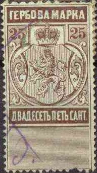
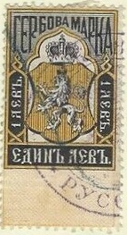
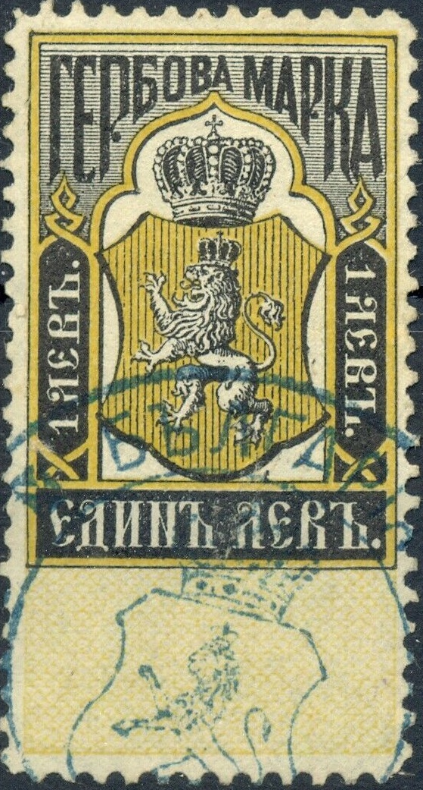
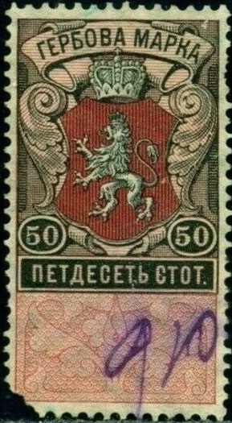
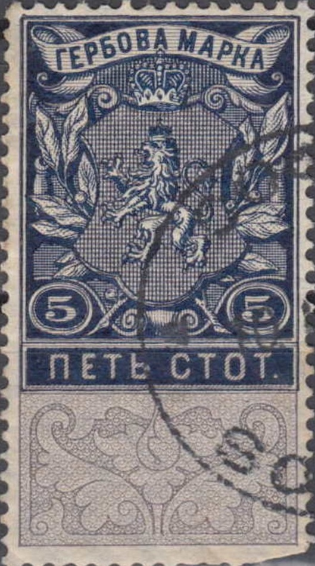

Return To Catalogue -Bulgaria fiscal stamps, part 2
Note: on my website many of the
pictures can not be seen! They are of course present in the
catalogue;
contact me if you want to purchase it.



Note the resemblance with the fiscal stamps of Russia (the fiscal stamps were first printed in Russia).
The first Bulgarian fiscal stamps in the above designs were issued in 1879, the value was in "CAHT." (cents) or "FPAHKA." (Franc); the following values were issued: 20 c blue, 25 c brown, 30 c orange, 40 c red, 50 c green, 80 c violet, 1 F yellow and black, 3 F green and black, 5 F blue and black, 10 F lilac and black, 20 F grey and black, 50 F orange and black and 100 F blue. In 1889 some values received a surcharge: 10 st on 25 c brown, 20 st on 80 c violet.

20 st on 80 c violet
In 1883 the currency was changed to
"CTOTNHKN" (as for the postage stamps): 10 st grey, 15
st black, 20 st blue, 50 st green, 1 L orange, yellow and black
(3 rows of pearls on the crown).
In 1889 the inscription on top was slightly reduced (Vienna
printing) and values were added in the bottom corners as well: 10
st grey, 15 st black, 20 st blue, 30 st orange (1893), 50 st
green, 1 L yellow and black (5 rows of pearls on the crown).
Additional values 10 s violet and 10 s brown were issued in 1894


10 s 1883 issue, 1889 issue (smaller letters and values at the
bottom as well) and 1894 issue (color change to violet and
brown).


20 s 1883 issue and 1889 issue

30 s and 40 s 1889 issue


50 s 1883 issue and 1889 issue





1902 issue, banner enters bar with text on top.



1909 issue, note that the banner no longer enters the text bar on
top.
In this design were issued (with vertical lines
behind the shield): 5 s black and green, 10 s black and grey, 15
s black and blue, 20 s black and grey, 30 s black and brown, 40 s
black and green, 50 s black and orange, 1 L black and olive, 3 L
blue and red, 5 L blue and orange, 10 L lilac and black.
In 1909 (with crossed lines as background behind the shield) the
values 5 s blue and grey, 10 s brown and grey, 20 s green and red
and 50 c brown and red were issued. Also the value 1 L blue and
red?

"30 CT." and red bars on 40 s.
Bulgaria fiscal stamps, part 2
{kind=link}
{kind=link}